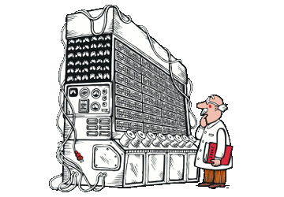
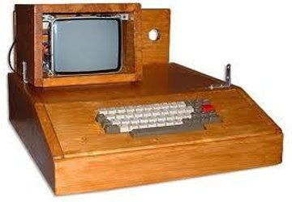

-
DISPOSITIVOS MECÂNICOS

Máquina Analítica
Idealizada em 1833 por Charles Babbage, professor da Universidade de Cambridge, considerado o “pai” da...
-
DISPOSITIVOS ELETROMECÂNICOS

Máquina de Cartão Perfurado
Inicialmente era uma máquina tabuladora mecânica que consistia em um motor elétrico armazenando...
-
COMPONENTES ELETRÔNICOS

Transistores
A história do transistor começou já no tempo em que eram utilizadas válvulas nos computadores. O foco das...
-
COMPUTADORES ELETRÔNICOS
Eniac
No ano de 1946, ocorreu uma revolução no mundo da computação com o lançamento do computador ENIAC...
-
EVOLUÇÃO DOS COMPUTADORES
4ª Geração (1971-1981)
A quarta geração de computadores da o inicio com o aparecimento dos microprocessadores em 1971, a qual...
-
COMPUTADORES ATUAIS

Computação Móvel
A computação móvel vem surgindo como uma nova proposta de paradigma computacional advinda...
-
NOVAS TECNOLOGIAS

Internet das coisas
A idéia por trás da Internet das coisas nasce de uma nova dimensão de conexão propiciada pela Internet além...
-
COMPILADORES DE JOGOS

Unreal Engine
Unreal Engine é um motor de jogo desenvolvido pela Epic Games, usado pela primeira vez em 1998 no jogo...
-
RECICLAGEM DE COMPUTADORES

Reciclatec
O Programa ReciclaTec tem como objetivo reciclar, recondicionar e dar um destino ambientalmente correto...